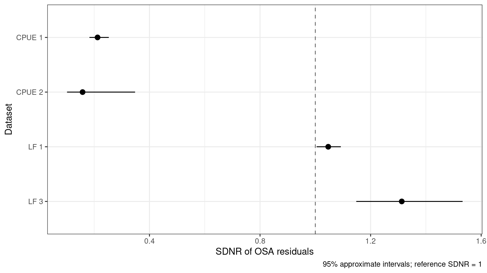
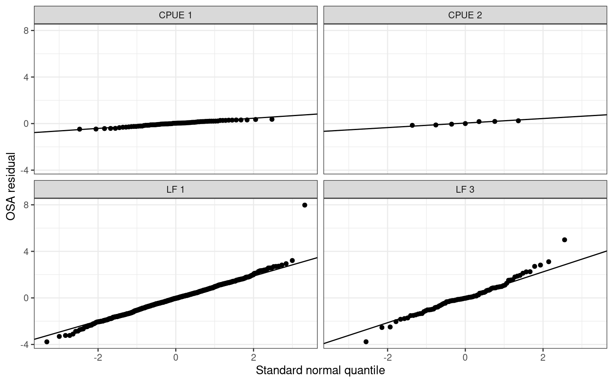
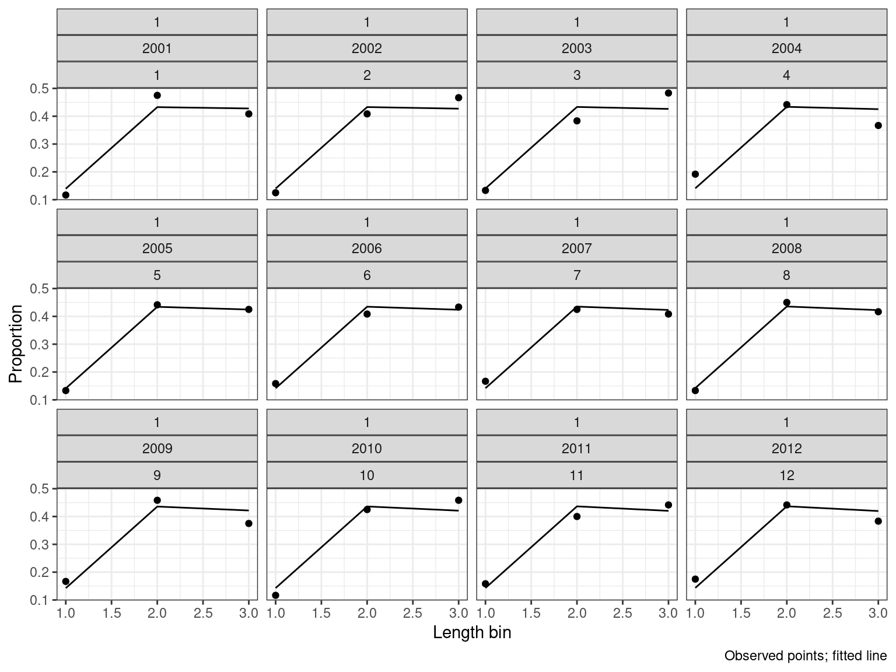
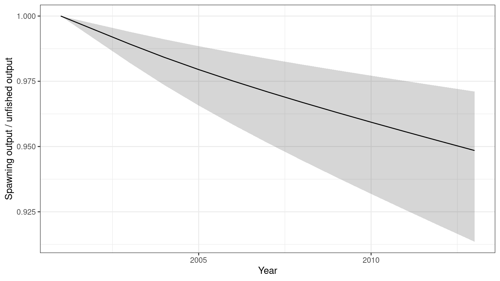
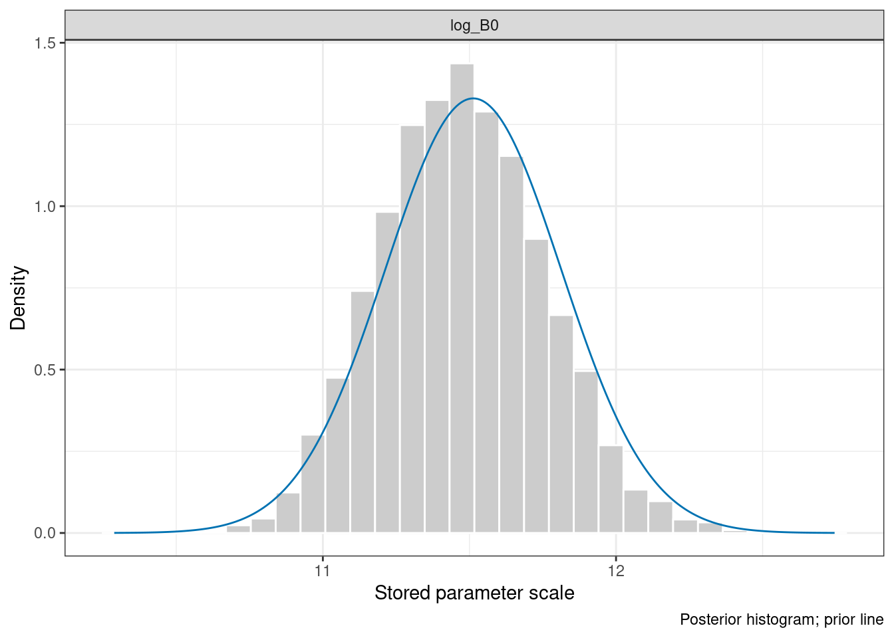
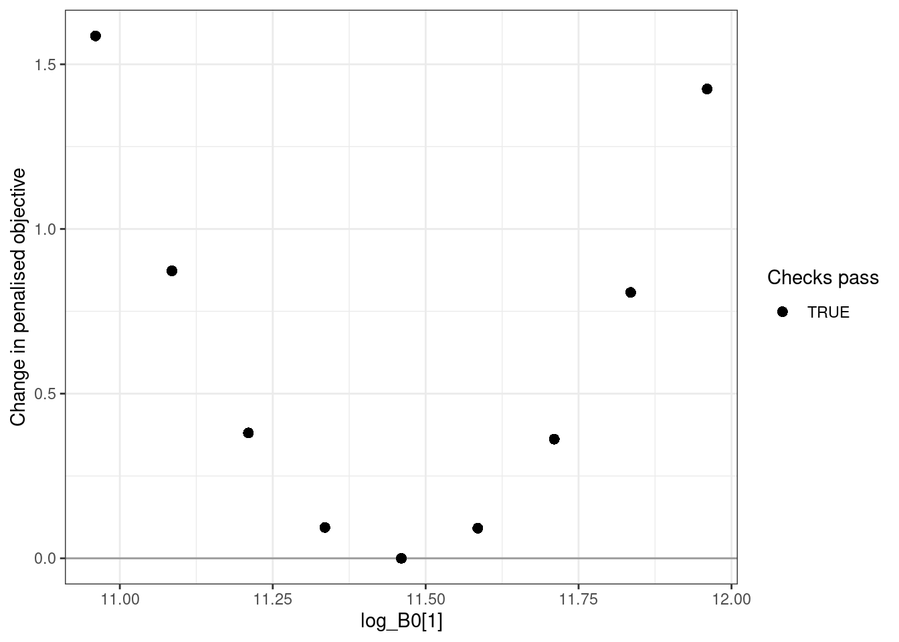

library(opal)
opaka <- opal_read(system.file("extdata", "opaka_quickstart_fit.rds", package = "opal"))
opaka <- opal_osa(opaka, seed = 123)Assessment diagnostics and sensitivity analyses
This guide demonstrates biological checks, one-step-ahead (OSA) residuals, posterior summaries, parameter profiles, model grids, and equilibrium reference points. Each analysis retains its settings and source identity in an opal_obj. Changing its scientific configuration clears dependent analyses. Saving and reading the object preserves the results.
The diagnostic design follows the SBT assessment examples. The combined SDNR figure places each dataset on a separate row and compares its OSA residual dispersion with a reference value of one.
The dataset-level OSA figure
Start with the bundled Opakapaka optimum. Reading it does not optimise or sample. This legacy optimum is retained for comparison with the numerical reference; the fit-review article explains its remaining gradient. An observation diagnostic can be inspected even when a fit check fails.
plot_osa_sdnr(opaka)
knitr::kable(opal_derived(opaka, "osa")$summary[,
c("dataset", "family", "n", "sdnr", "lower", "upper", "excluded", "failures")], digits = 3)| dataset | family | n | sdnr | lower | upper | excluded | failures |
|---|---|---|---|---|---|---|---|
| CPUE 1 | lognormal | 75 | 0.212 | 0.183 | 0.253 | 0 | 0 |
| CPUE 2 | lognormal | 7 | 0.158 | 0.102 | 0.348 | 0 | 0 |
| LF 1 | multinomial | 1103 | 1.047 | 1.005 | 1.092 | 172 | 0 |
| LF 3 | multinomial | 94 | 1.313 | 1.148 | 1.533 | 25 | 0 |
SDNR is the standard deviation of normalised OSA residuals. Values above one indicate more residual variation than expected under the fitted observation model; values below one indicate less. This example has relatively small CPUE SDNRs and a larger research-fleet composition SDNR. These are prompts to examine variance assumptions, weighting, and model flexibility. They are not automatic instructions to reweight the data. The chi-squared intervals assume independent normal residuals with known model parameters, so fitted-parameter effects make them approximate.
Each CPUE index has its own row, even when several indices use the same fishery. Length and weight compositions are grouped by fishery. Inspect time patterns and normal quantiles as well as SDNR:
plot_osa_residuals(opaka, type = "qq")
Likelihood and conditioning conventions
| Observation likelihood | Conditional distribution used by OSA |
|---|---|
| Lognormal CPUE | Normal distribution of log CPUE, with the fitted total log-scale SD |
| Multinomial composition | Sequential binomial distributions |
| Dirichlet composition | Sequential beta distributions |
| Dirichlet–multinomial composition | Sequential beta-binomial distributions |
All three composition likelihoods work for both length and weight data. The calculation uses the prepared observations, fitted probabilities, effective sample sizes, and concentration parameters. It introduces no extra pseudocounts. Multinomial rounding follows the likelihood. Discrete residuals randomise within the observed count’s probability mass; an explicit seed makes them reproducible without changing the caller’s random-number state.
For fixed-effect models, residuals condition on the fitted parameters. When the model declares random effects through opal_obj(random = ...), Opal uses RTMB’s sequential, Laplace-based integration of those latent states. Other observation streams remain observed while each stream is processed. This distinction matters for recruitment deviations: estimated fixed effects and integrated random effects are different diagnostic targets.
Within a stream, input order defines observation order, followed by ascending composition bin. The final bin is constrained and has no residual. Removed fisheries, zero sample sizes, exhausted counts, and any numerical failures remain in opal_derived(x, "osa")$residuals with an explicit reason. Failed residuals are reported in the summary; they must not be mistaken for a successful check. Catch is conditioned on, rather than modelled with an observation likelihood, so its reconstruction differences are not OSA residuals. Recruitment priors are also outside this observation diagnostic.
A small, reproducible assessment
The remaining examples use simulated data for two fisheries, 12 years, and two seasons. opal_example_inputs() supplies CPUE and both composition streams; its family argument selects any of the three composition distributions. Three parameters are estimated, and biology and recruitment deviations are fixed. This is a software tutorial, not an assessment of a real stock.
inputs <- opal_example_inputs("multinomial", seed = 712)
assessment <- opal_obj(inputs$data, inputs$parameters, inputs$map)
assessment <- opal_fit(assessment)
summary(assessment)<opal_obj> fitted
Active parameters: 3
Objective: 240.3783
Fit check: passed | MCMC check: not run cpue_data$ts is a one-based, flattened year/season index: (year_index - 1) * n_season + season_index. The first year’s seasons are 1 and 2; the second year’s seasons are 3 and 4. Composition years are model-year indices because their predictions use catch accumulated over that year. data$years gives display labels. Biological vectors are at age unless the model explicitly supplies length-based biology; weight and spawning-output units must be consistent with the supplied inputs. catch_units_f distinguishes weight from numbers. Use plot_catch(weight_units = ...) and plot_biomass_spawning(units = ..., scale = ...) for explicit display units.
Biological acceptance
opal_diagnose(assessment)$passes
[1] TRUE
$checks
initial_equilibrium harvest_penalty population
TRUE TRUE TRUE
mortality maturity spawning_potential
TRUE TRUE TRUE
weight selectivity steepness
TRUE TRUE TRUE
recruitment spawning_output harvest
TRUE TRUE TRUE
depletion catch_reconstruction
TRUE TRUE
$metrics
$metrics$initial_penalty
[1] 0
$metrics$total_penalty
[1] 0
$metrics$max_harvest
[1] 0.007761073
$metrics$max_relative_catch_error
[1] 5.636512e-11A passing fit requires convergence, the gradient and Hessian checks, parameter bounds, and biological feasibility. The latter includes initial-equilibrium and harvest penalties, abundance, mortality, maturity, spawning potential, harvest fractions, catch reconstruction, and depletion. Positive continuation keeps an invalid trial state numerically evaluable; a positive penalty does not establish a valid equilibrium.
Posterior checking evaluates every retained joint draw, including its bounds and draw-specific biology, in addition to R-hat, ESS, divergences, and tree depth. Failures retain their chain, iteration, and reason. Marginal draws that omit random effects cannot pass the full biological posterior check. Old validation records become stale when the validation contract changes.
Other composition distributions
These examples fit both composition streams for each likelihood, then collect the same SDNR statistic. The seed controls independent simulated observations and residual randomisation; results need not be identical across distributions.
family_diagnostics <- lapply(c("multinomial", "Dirichlet", "Dirichlet-multinomial"), function(family) {
z <- opal_example_inputs(family)
fit <- opal_fit(opal_obj(z$data, z$parameters, z$map))
fit <- opal_osa(fit)
out <- opal_derived(fit, "osa")$summary
out$composition_family <- family
out
})
knitr::kable(do.call(rbind, family_diagnostics)[,
c("composition_family", "dataset", "n", "sdnr", "failures")], digits = 3)| composition_family | dataset | n | sdnr | failures |
|---|---|---|---|---|
| multinomial | CPUE 1 | 24 | 0.898 | 0 |
| multinomial | CPUE 2 | 24 | 1.062 | 0 |
| multinomial | LF 1 | 24 | 0.734 | 0 |
| multinomial | LF 2 | 24 | 0.926 | 0 |
| multinomial | WF 1 | 24 | 1.239 | 0 |
| multinomial | WF 2 | 24 | 0.935 | 0 |
| Dirichlet | CPUE 1 | 24 | 0.895 | 0 |
| Dirichlet | CPUE 2 | 24 | 1.064 | 0 |
| Dirichlet | LF 1 | 24 | 0.641 | 0 |
| Dirichlet | LF 2 | 24 | 0.827 | 0 |
| Dirichlet | WF 1 | 24 | 1.141 | 0 |
| Dirichlet | WF 2 | 24 | 0.774 | 0 |
| Dirichlet-multinomial | CPUE 1 | 24 | 0.898 | 0 |
| Dirichlet-multinomial | CPUE 2 | 24 | 1.062 | 0 |
| Dirichlet-multinomial | LF 1 | 24 | 0.864 | 0 |
| Dirichlet-multinomial | LF 2 | 24 | 0.944 | 0 |
| Dirichlet-multinomial | WF 1 | 24 | 0.998 | 0 |
| Dirichlet-multinomial | WF 2 | 24 | 1.001 | 0 |
plot_composition(assessment, type = "lf", fishery = 1)
Posterior analysis
The bundled simulated posterior was generated with four chains, 1,000 warm-up iterations, and 1,000 retained iterations per chain. Its generation script is data-raw/generate-assessment-example.R. That script requires both fit and MCMC checks to pass before saving. Website builds read the result instead of sampling. To reproduce it yourself:
assessment <- opal_mcmc(assessment, seed = 927, chains = 4, cores = 1,
num_warmup = 1000, num_samples = 1000, adapt_delta = 0.95)
assessment <- opal_check(assessment, "mcmc")
opal_save(assessment, "simulated-assessment.rds")
sampled <- opal_read(system.file("extdata", "assessment_example.rds", package = "opal"))
summary(sampled)<opal_obj> sampled
Active parameters: 3
Objective: 240.3783
Fit check: passed | MCMC check: passed
MCMC: 4 chains; 1000 retained iterations
knitr::kable(sampled$validation$mcmc$metrics$parameters, digits = 3)| variable | rhat | ess_bulk | ess_tail |
|---|---|---|---|
| log_B0 | 1.000 | 4087.463 | 3059.671 |
| log_cpue_q[1] | 1.000 | 3882.720 | 2788.743 |
| log_cpue_q[2] | 1.001 | 5052.341 | 3327.968 |
sampled$validation$mcmc$metrics$biology[c("passes", "checked", "scope")]$passes
[1] TRUE
$checked
[1] 4000
$scope
[1] "all retained joint draws"Summaries use each draw’s own model report and preserve the selected chain and iteration identifiers. Non-finite values stop the calculation rather than being silently removed. Running summaries does not turn an unchecked posterior into an accepted one.
sampled <- opal_posterior(sampled,
quantities = c("B0", "spawning_biomass_y", "static_depletion_y"))
posterior <- opal_derived(sampled, "posterior")
knitr::kable(posterior$parameters, digits = 3)| quantity | element | mean | sd | q0.025 | q0.500 | q0.975 | parameter |
|---|---|---|---|---|---|---|---|
| parameter | 1 | 11.476 | 0.280 | 10.953 | 11.467 | 12.041 | log_B0 |
| parameter | 2 | -0.234 | 0.026 | -0.285 | -0.234 | -0.183 | log_cpue_q[1] |
| parameter | 3 | 0.176 | 0.026 | 0.125 | 0.176 | 0.228 | log_cpue_q[2] |
depletion <- subset(posterior$reports, quantity == "static_depletion_y")
depletion$year <- c(sampled$data$years, sampled$data$last_yr + 1)
ggplot2::ggplot(depletion, ggplot2::aes(x = year, y = q0.500)) +
ggplot2::geom_ribbon(ggplot2::aes(ymin = q0.025, ymax = q0.975), alpha = 0.2) +
ggplot2::geom_line() + ggplot2::labs(x = "Year", y = "Spawning output / unfished output") +
ggplot2::theme_bw()
plot_prior_posterior(sampled)
The plotted prior is its specified, untruncated density; bounds may further restrict the target. Shared-map parameters with multiple prior contributions are omitted with a warning rather than displayed as a misleading single prior. SparseNUTS diagnostics can use opal_as_tmbfit(sampled) for additional chain plots.
Profiles and model grids
opal_profile() fixes a parameter value and re-optimises the remaining active parameters. It profiles the penalised objective, including priors, unless those terms are absent. Do not interpret it automatically as a likelihood-ratio confidence interval. Inspect the saved convergence, gradient, biological checks, and component contributions for every point.
centre <- assessment$fit$parameters$log_B0
assessment <- opal_profile(assessment, "log_B0", centre + seq(-0.5, 0.5, length.out = 9))
knitr::kable(opal_derived(assessment, "profile")$table, digits = 3)| value | objective | delta | max_gradient | passes | error |
|---|---|---|---|---|---|
| 10.960 | 241.965 | 1.586 | 0 | TRUE | NA |
| 11.085 | 241.251 | 0.873 | 0 | TRUE | NA |
| 11.210 | 240.759 | 0.381 | 0 | TRUE | NA |
| 11.335 | 240.472 | 0.094 | 0 | TRUE | NA |
| 11.460 | 240.378 | 0.000 | 0 | TRUE | NA |
| 11.585 | 240.470 | 0.091 | 0 | TRUE | NA |
| 11.710 | 240.740 | 0.362 | 0 | TRUE | NA |
| 11.835 | 241.186 | 0.807 | 0 | TRUE | NA |
| 11.960 | 241.803 | 1.425 | 0 | TRUE | NA |
plot_opal_profile(assessment)
A grid makes alternative assumptions explicit. Checkpoints are reusable only when the scientific target, starting state, fitting controls, and validation contract match. Failed scenarios remain in the result.
higher_mortality <- inputs$data
higher_mortality$M <- rep(0.35, inputs$data$n_age)
grid <- opal_grid(opal_obj(inputs$data, inputs$parameters, inputs$map),
scenarios = list(base = list(), higher_M = list(data = higher_mortality)))
knitr::kable(grid$summary, digits = 3)| model | objective | passes | reused | error |
|---|---|---|---|---|
| base | 240.378 | TRUE | FALSE | NA |
| higher_M | 257.592 | TRUE | FALSE | NA |
For a larger analysis, supply directory = "sensitivity-checkpoints". Sampling and balanced model selection are explicit subsequent steps:
grid <- opal_grid_mcmc(grid, seed = 927, chains = 4, cores = 4,
num_warmup = 1000, num_samples = 1000)
selection <- opal_grid_draws(grid, n_per_model = 400, seed = 123)Balanced selection requires a current passing posterior check for every grid member. It samples without replacement, balances chains, and attaches equal model weights. Equal model weights are a scientific assumption, not a conclusion from comparing the fitted objectives.
Equilibrium reference points
opal_msy() calculates deterministic equilibrium yield using a stated fleet allocation, fixed reference-year selectivity, and Beverton–Holt recruitment. Here the fleets receive equal harvest-intensity weights. This calculation is independent of the projection engine.
assessment <- opal_msy(assessment, fleet_weights = c(0.5, 0.5))
knitr::kable(opal_derived(assessment, "msy")$draws, digits = 3)| iteration | chain | draw | msy | b_msy | r_msy | u_msy | depletion_msy | terminal_b_bmsy | at_upper_bound | resolved |
|---|---|---|---|---|---|---|---|---|---|---|
| NA | NA | 1 | 2123.869 | 27020.71 | 3509.737 | 0.16 | 0.285 | 3.329 | FALSE | TRUE |
u_msy is a scalar seasonal harvest intensity, not an instantaneous annual fishing mortality. Fleet/age harvest fractions are u * fleet_weight[f] * selectivity[f,a]. Yield uses model weight units, while b_msy uses model spawning-output units. The engine matches the historical seasonal survival and plus-group convention and solves equilibrium recruitment without recruitment deviations or positive continuation. Upper-bound maxima are flagged as unresolved.
# Deliberately small, balanced subset for a quick tutorial calculation.
selected <- unlist(lapply(0:3, function(chain) chain * 1000 + seq(1, 901, by = 100)))
sampled <- opal_msy(sampled, fleet_weights = c(0.5, 0.5),
uncertainty = "mcmc", draws = selected)
msy <- opal_derived(sampled, "msy")
knitr::kable(head(msy$draws), digits = 3)| iteration | chain | draw | msy | b_msy | r_msy | u_msy | depletion_msy | terminal_b_bmsy | at_upper_bound | resolved | |
|---|---|---|---|---|---|---|---|---|---|---|---|
| 1 | 1001 | 1 | 1 | 2288.590 | 29116.36 | 3781.941 | 0.16 | 0.285 | 3.342 | FALSE | TRUE |
| 101 | 1101 | 1 | 101 | 1866.202 | 23742.57 | 3083.936 | 0.16 | 0.285 | 3.303 | FALSE | TRUE |
| 201 | 1201 | 1 | 201 | 2429.690 | 30911.48 | 4015.111 | 0.16 | 0.285 | 3.352 | FALSE | TRUE |
| 301 | 1301 | 1 | 301 | 2227.596 | 28340.37 | 3681.148 | 0.16 | 0.285 | 3.337 | FALSE | TRUE |
| 401 | 1401 | 1 | 401 | 1780.616 | 22653.70 | 2942.503 | 0.16 | 0.285 | 3.293 | FALSE | TRUE |
| 501 | 1501 | 1 | 501 | 1491.058 | 18969.84 | 2464.004 | 0.16 | 0.285 | 3.251 | FALSE | TRUE |
msy$probability_below_bmsy[1] 0Every selected draw supplies its own biology. This 40-draw result demonstrates the calculation; use an appropriately sized posterior analysis for inference. These reference points are conditional on the fleet mix, selectivity, biology, and deterministic recruitment assumptions. They are not stochastic MSY or management advice.
Projection development, estimated selectivity time blocks, and close-kin components are outside the scope of this tutorial and feature addition.